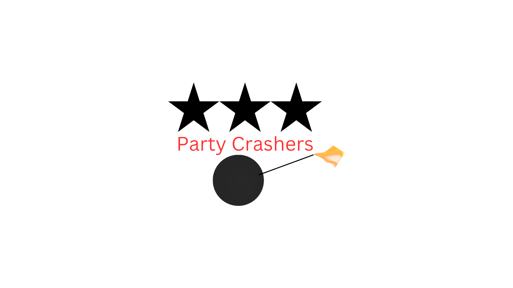

Shadowlash
Qu'est ce que Shadowlash ?
Le Projet Shadowlash est un rêve commun à notre équipe. Nous souhaitons réaliser un jeu de plateforme 2D, inspiré stylistiquement par les jeux de plateformes rétros, tout en rajoutant un aspect coopératif, et en rendant le tout fluide et moderne.
Le jeu mets en scène un univers burlesque et cartoonesque, mais aussi sombre. Rendant le jeu approprié pour tout le monde. Suivez les histoires d'un chevalier, obligé de sauver son monde d'une terrible malédiction. Dans cette aventure, il recontrera des personnages haut en couleurs, des redoutables adversaires, et plus encore.
Ce site met en ligne la documentation du projet, le lien du jeu.
À propos de nous
Nous sommes quatres étudiants de l'Epita. Ceci est notre projet de fin de deuxième semestre. Nous formons le studio Party Crashers:

Implémentation du multijoueur et de l'IA par Barthélemy Marco Mora--Kaba
Audio et conception des niveaux par Gustave Molina
Graphismes, interfaces d'utilisateur et jouabilité par Tiago Teixeira
Histoire et site Internet par Enzo Le-Dressay